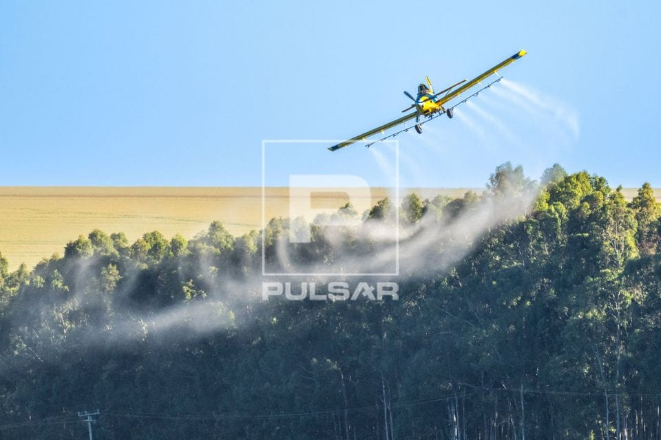

A relação entre campo e cidade é essencial para o crescimento econômico de uma região. O campo fornece alimentos, matérias-primas e produtos fundamentais para as cidades, enquanto os centros urbanos oferecem mercados, serviços e tecnologias. Essa troca movimenta a economia e reduz desigualdades.
